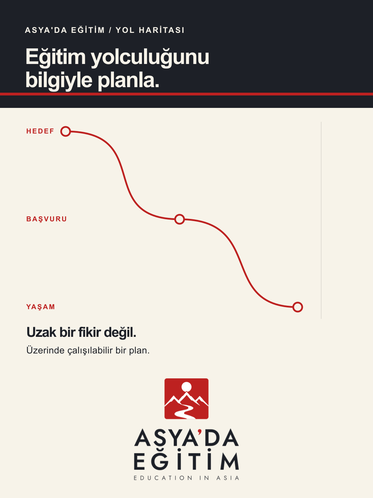
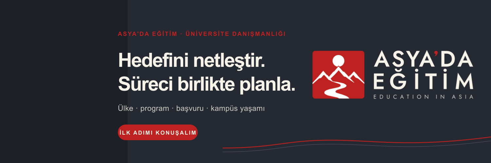
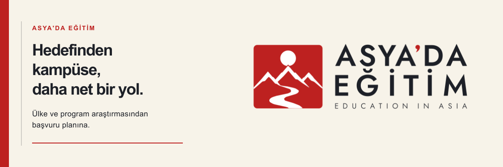

1080 × 1440 px · 3:4


Kilitli lockup: P-01/light · metin ve rota grafiği düzenlenebilir SVG’de.
SOCIAL COVER SET · EVERGREEN
Instagram akış kapağı, X profil başlığı ve LinkedIn şirket sayfası kapağı. Aynı marka dili; her mecranın oranı, avatar çakışması ve okuma mesafesine göre ayrı yerleşim.
Ölçü notu: Instagram’da profil başlığı/banner alanı yok; burada 3:4 akış kapağı hazırlandı. X için resmî öneri 1500×500 px. LinkedIn şirket sayfası için 1128×376 px kullanıldı.

1080 × 1440 px · 3:4
Kilitli lockup: P-01/light · metin ve rota grafiği düzenlenebilir SVG’de.

1500 × 500 px · 3:1 · sol alt avatar güvenli alanı
Kilitli lockup: H-02/dark · tüm ana içerik avatar örtüşme alanının dışında.

1128 × 376 px · 3:1
Kilitli lockup: H-02/light · başlık dar mobil önizlemede de solda kalır.